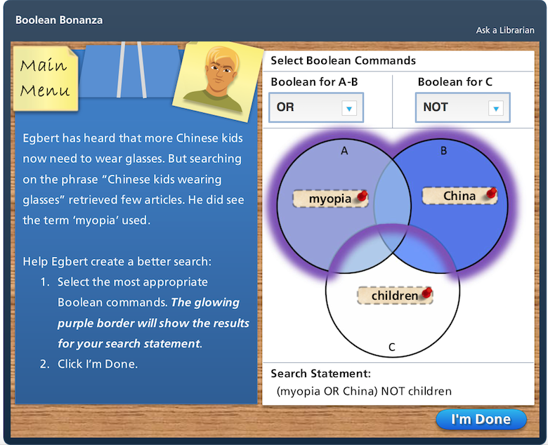
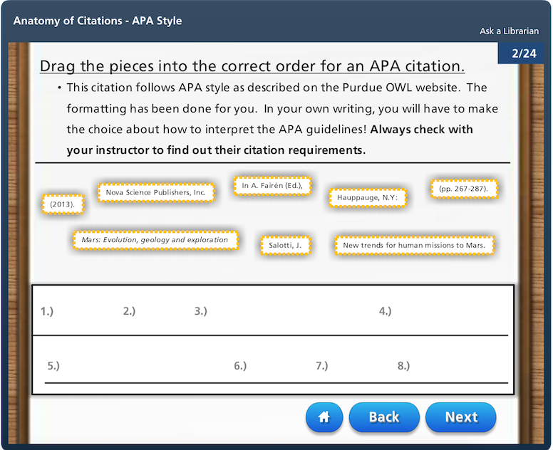
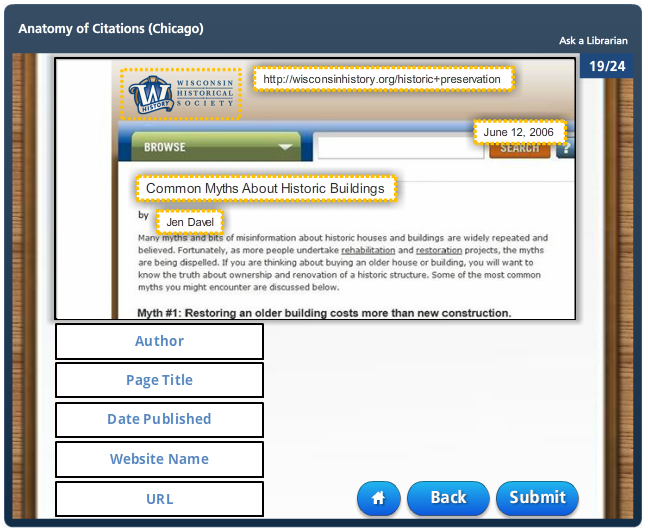

About the Project
These modules were developed to assist librarians teaching information literacy instruction in Marquette's First Year English (FYE) program. They have been used in a traditional face to face instruction, flipped classroom instruction or as stand alone online assignments.
The modules were designed using Articulate Storyline 3 - Build 3.13.26122.0 and were exported as SCORM packages which were then loaded into FYE course sites in Desire2Learn (D2L), Marquette's Learning Management System (LMS).
A more in depth description of how the modules were used in information literacy instruction can be found in the chapter "Problems and Promises of Using LMS Learner Analytics for Assessment" in the 2018 book Academic Libraries and the Academy: Strategies and Approaches to Demonstrate Your Value, Impact, and Return on Investment, Volume Two.
In 2020 the project team worked with Marquette's BI team to develop an interactive dashboard capturing usage of these modules across the Marquette LMS. This five-minute flare from D2L's Fusion conference explains how this dashboard was created and how it is being leveraged to measure and expand the libraryís instructional impact across campus.
In 2015, Grand Valley State University (GVSU) adapted the anatomy of citation tutorial to meet the instructional needs at their campus. In a co-authored paper, members of the GVSU and Marquette team share the peaks and pitfalls of developing the module.
Accessibility Statement and Voluntary Product Accessibility Template (VPAT)
The project team wants to empower all learners to have accessible, compelling, and enjoyable e-learning experiences. With that goal in mind, these modules were built to support Web Content Accessibility Guidelines (WCAG) and Section 508 accessibility standards, as described in this VPAT.
The VPAT is a living document. It is updated as enhancements are developed and new issues come to light. If you discover an accessibility issue, please let us know. We're on this journey together!
Get Involved and Contribute
Contributions and suggestions are welcomed and encouraged!! Please contact the project team or please feel free to expand and improve on the original modules and upload your updated modules to the project GitHub site.Academic Research Introduction
 Intended to provide a brief introduction to academic research. A video explains types of sources, a screencast tutorial demonstrates how to search Academic Search Complete, and students have the opportunity to practice search for an article related to their topic. This information is saved to the D2L course site for review by the instructor and librarian.
Intended to provide a brief introduction to academic research. A video explains types of sources, a screencast tutorial demonstrates how to search Academic Search Complete, and students have the opportunity to practice search for an article related to their topic. This information is saved to the D2L course site for review by the instructor and librarian.
Try it now »
Narrowing a Topic
 In this scenario based activity, students are asked to help 3 of their classmates narrow down their topics. By moving a series of sliders, students aim to develop a research question that is interesting, yet narrow enough to find scholarly sources.
In this scenario based activity, students are asked to help 3 of their classmates narrow down their topics. By moving a series of sliders, students aim to develop a research question that is interesting, yet narrow enough to find scholarly sources.
Try it now »
Boolean Bonanza
Students are asked to help 3 of their classmates choose the best Boolean search commands for their searches. Venn Diagrams change color and the search statement is dynamically updated as students select the Boolean commands. Constructive feedback is given for each submission and students have an opportunity to construct their own search statement at the end of the tutorial.
Try it now »
Evaluating Sources
 In this scenario based activity, students are asked to help 4 of their classmates evaluate 3 sources they are considering using for their paper. Students can read the entirety of each source, then write a 2 to 3 sentence explanation of why their classmate should or shouldn’t use the source and why. Based on the concept of Calibrated Peer Review, there is one exemplar source, one substandard source and one bubble source.
In this scenario based activity, students are asked to help 4 of their classmates evaluate 3 sources they are considering using for their paper. Students can read the entirety of each source, then write a 2 to 3 sentence explanation of why their classmate should or shouldn’t use the source and why. Based on the concept of Calibrated Peer Review, there is one exemplar source, one substandard source and one bubble source.
Try it now »
Anatomy of Citations - MLA Style
 Do students eyes glaze over when you begin to talk about citation formats? Show students the value of learning about citations by having them practice on real content! Students must identify the needed parts of 3 real publications and drag them to the appropriate category, i.e. Journal Title, Volume, Page Number. Upon completion of the activity, students are show the MLA citation for each publication.
Do students eyes glaze over when you begin to talk about citation formats? Show students the value of learning about citations by having them practice on real content! Students must identify the needed parts of 3 real publications and drag them to the appropriate category, i.e. Journal Title, Volume, Page Number. Upon completion of the activity, students are show the MLA citation for each publication.
Try it now »
Anatomy of Citations - APA Style
 In this activity, students are asked to identify necessary citation information, place the information in the correct citation order and then identify the source type. To begin, the student is shown four sources on the topic of Mars exploration, these questions are for practice and are not graded. The second set of four sources on the topic of refugees is graded. (This module was partially adapted with permission from Grand Valley State University Libraries.)
Try it now »
Anatomy of Citations - Chicago Style
 Students are asked to identify necessary citation information, place the information in the correct citation order and then identify the source type. Students are first given a set of sources for practice that are not graded. The second series of sources is graded.
Try it now »
Usage of Sources (The Party)
 To practice thinking about what sources work well together, instead of choosing sources, students will choose who to invite to a small dinner party. The goal is to put together a group of guests that will be able to find enough common ground to have interesting conversations.
To practice thinking about what sources work well together, instead of choosing sources, students will choose who to invite to a small dinner party. The goal is to put together a group of guests that will be able to find enough common ground to have interesting conversations.
Try it now »